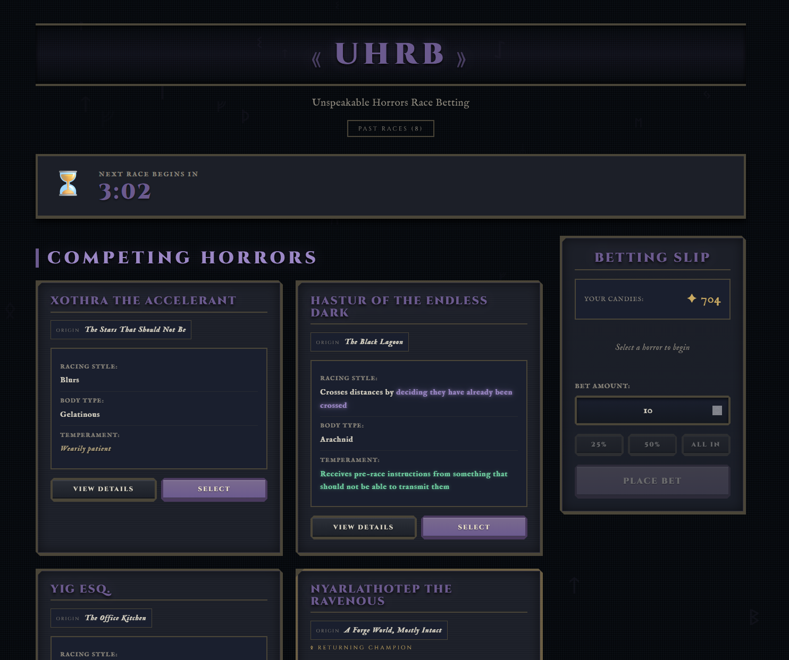
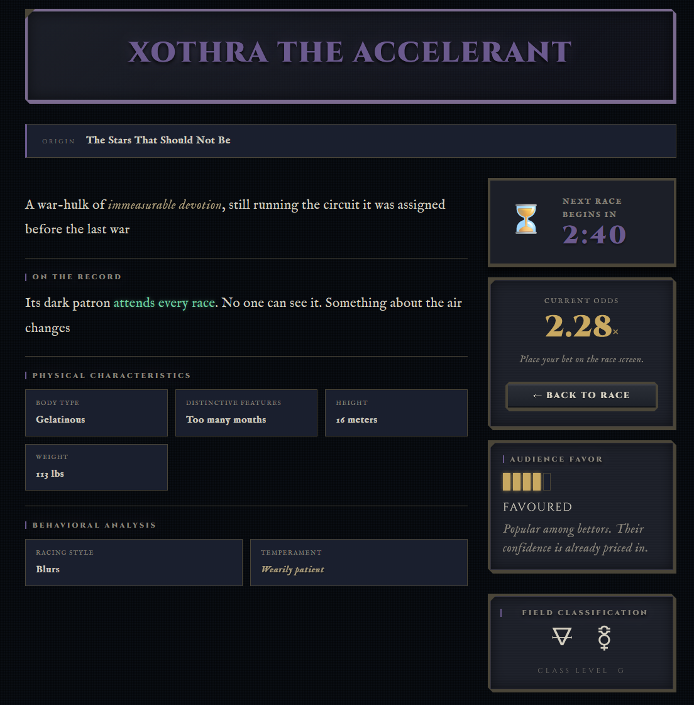
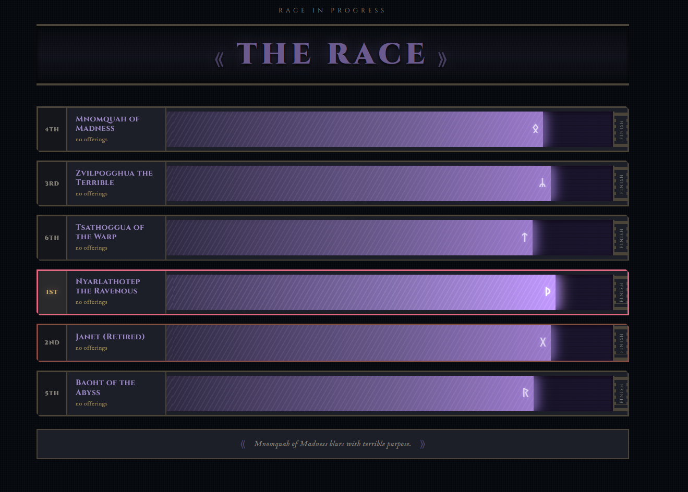
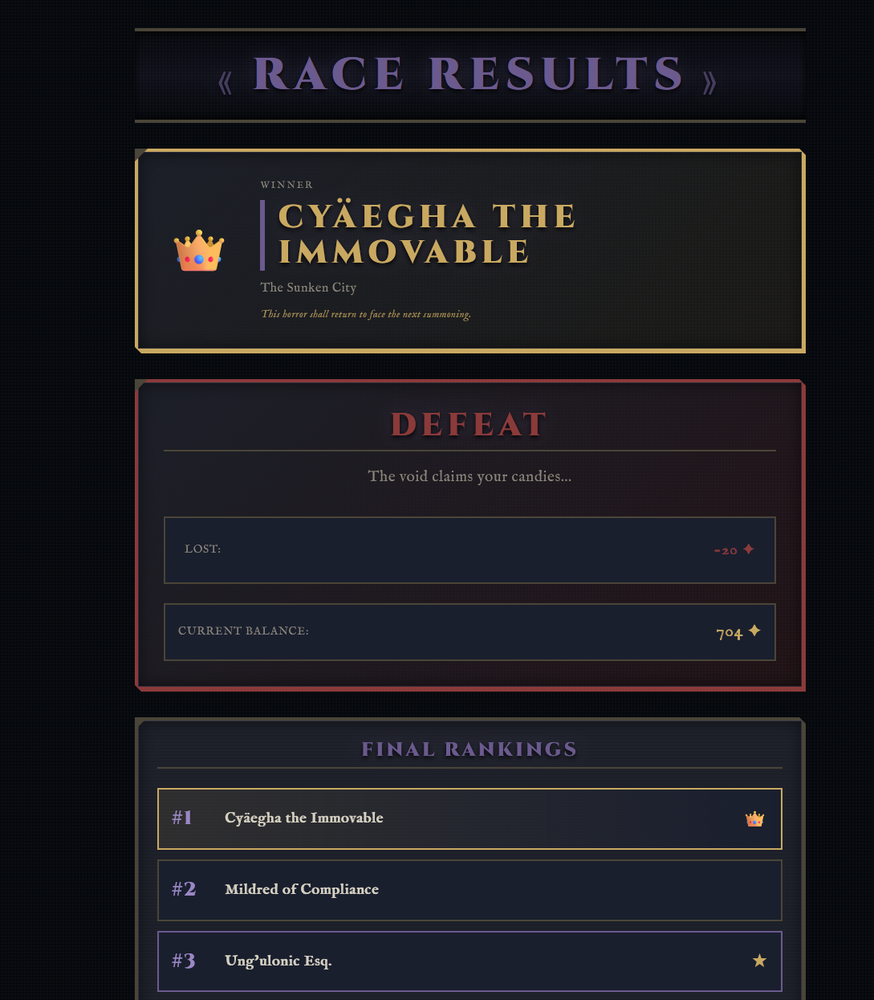

A browser-based betting game where players wager "candies" on procedurally generated eldritch monsters racing each other.
I decided I needed to get better at front-end web development, and wanted to improve my back-end implementation know-how. The best way for me to learn is by building a project that excites me and forces me to solve the specific problems I want to get better at. I needed to build a full-stack web app with real-time features and (for the fun of it) procedural content generation. The goal was laid out, next was to come up with the premise...
It started as a joke — what if there was a horse racing game but every horse was a cosmic horror? It grew into a full-stack experiment in procedural content generation, real-time multiplayer state, and deceptive UI design. The goal was a game that feels alive and mysterious: players should never see raw numbers, but should gradually learn to read the monsters the same way a gambler learns to read a horse.




No stat numbers are ever shown to the player. The entire information layer — power tier, dominant stat, crowd sentiment, return odds — is communicated through prose, glowing text effects, and alchemical symbols. Build intuition over time by cross-referencing bios with race outcomes.
Svelte 5 SPA and a Fastify REST + WebSocket API. The server drives everything; the client just reacts.waiting → racing → finished and broadcasts each transition over WebSocket. Client navigation is forced by state (e.g. entering racing hard-redirects any page to /race).POST /api/race/:id/payout/validate endpoint ignores whatever the client claims and recomputes bet × odds from server-stored data. You can't fake a win.serverRankings from the WebSocket payload. Monsters always cross the finish line in the correct order, but the race itself still looks contested.Each Horror has four stats — Speed, Endurance, Madness, and Strength — that determine its performance in the race (with a little touch of randomization as well). Each Horror is constructed from several catalog entries such as: Origin, Physical Traits, Race Style, Temperment, etc. Each catalog entry is tagged with a Letter (A, C, G, T) that corresponds to a stat category. Each letter adds to that stat's total. Luck is derived from letter variety — the number of unique stat letters present across all entries. Using this system, the bio page for Horrors actually can describe the detailed stats of the Horror without ever showing raw numbers. Given time and attention, this can be "decoded" by players to understand each horror's race potential.
There is a 'value' attached to each Horror that is hidden but contributes to the odds calculation about %70, while their stats contribute about %30. This means that a Horror with low stats may be favored and thus not have a good return, giving more liklihood of an upset and encouraging players to consider more than just the visible stat signals when placing bets.
There is a RichTextsystem for Horror bios that allows for inline styling of specific words or phrases.
Each stat category has a corresponding RichText style that visually hints at the monster's strengths.
For example, a monster with high Speed (A) might have more <glow> tags in its bio,
while a high Endurance (C) monster might have more <ancient> tags.
This creates a layered information system where players can pick up on visual cues.
Legendaries are injected at a 5% chance per race and are capped at 1.5× their base stat total to prevent total stat dominance — they are favored but not guaranteed to win.
Problem: How can I confirm the balance of the existing features?
generateHorrors, calculateOdds, and simulateRace
directly against the same production logic. Due to the previous winner returning as champion,
it can identify a dynasty mechanic that only shows up at scale. It is fully deterministic using --seed arg,
useful for before/after comparisons when tuning weights.
This tool helped identify that the Madness stat was too influential on outcomes, leading to a rework of the formula to reduce its impact and ensure that high-Madness monsters are more volatile but not strictly more likely to win.
node server/scripts/simulate.js --races 1000 --quiet
node server/scripts/simulate.js --races 500 --seed my-seed --quiet
node server/scripts/simulate.js --races 1000 --format csv --output results.csvSvelte 5, svelte-spa-router, ViteFastify, @fastify/websocket, @fastify/rate-limitlocalStorage, capped at 50 racesPino, structured + module-labeled, level-controlled via LOG_LEVELVitest 2.xPino and log calls throughoutComing from system-level / application development, this project was a great learning experience. The real-time networking, procedural content generation, and hidden information design were all things I have done before and am comfortable with. But the front-end implementation was a new challenge that forced me to learn how to build UI and manage client-side state effectively. In the end, I am happy with how it turned out - but I still hate web development... just a little less than before.